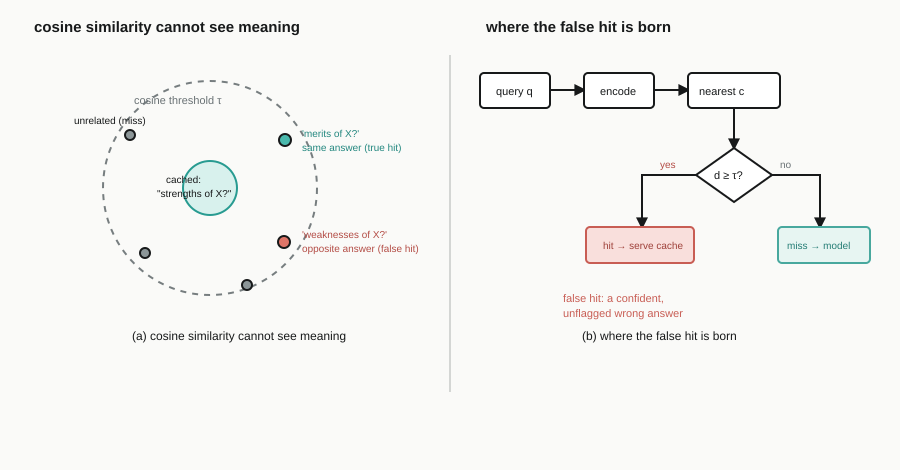

Apps real people use, systems work that goes down to the machine code, and an independent research paper, each one shipped and documented. Open any project for the full story.
HAZARD ANALYSIS / 01
basalt
The hazard check NVIDIA never shipped for sm_120.
sm_120 has no hardware interlock. One wrong wait count and the GPU reads a stale register and returns a wrong answer silently.
SASS DEPENDENCY MAP
stall ↗ latency · stale read, no fault, full speed
012026Actively maintained
basalt
The check NVIDIA never shipped
On NVIDIA sm_120 there is no hardware interlock. 21 bits of every instruction tell the GPU how long to wait, and a count one cycle short reads a stale register and returns a wrong answer at full speed, with no crash and no warning. Compilers write those bits; nothing read them back. Pointed at 2,762 kernels NVIDIA ships in CUDA, held out of every table it uses, basalt verifies 10,218,030 dependencies with zero errors.
Most free ATS checkers hand you one invented score and paywall the rest. ATS Screener returns six honest scores from six real enterprise platforms, each modeling that vendor's own parser strictness, keyword strategy, and calibrated thresholds. Your resume is parsed entirely in your browser and never uploaded; only the extracted text is sent for AI scoring. A live counter has tracked 2,000+ people through it.
Most students never write a research paper unaffiliated with any institution. I did: preregistered, reproducible end to end, with a real DOI.

Independent research·2026
When Semantic Caches Lie
Independent research, sole author · 21 pages
Why one similarity threshold cannot make an LLM cache both safe and useful across domains. A preregistered, fully reproducible study, written, run, and typeset solo.
Conflict-free real-time docs for developers Collaborative two-person build
A real-time collaborative writing platform where developers co-edit rich technical documents with live cursors, AI assistance, and one-click publishing.
A cross-platform network engineering workbench: 40+ tools, RFC-correct IP math in the browser, and a native Electron backend for real ping, traceroute, and port scanning.
A complete 2D knife-throwing arcade game built from scratch on raw Java Swing/AWT, with a hand-rolled game loop, collision, particles, sound, and a persistent shop.